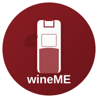
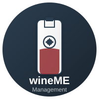

This is the logo users see when they download the main wineME app

This is the logo admins see when they download the management app

These logos appear as app icons on your phone's home screen after you install the apps. They should be visible in your app drawer or home screen.
If you can't see them: